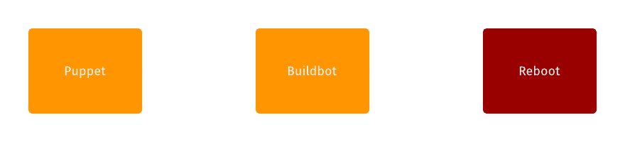
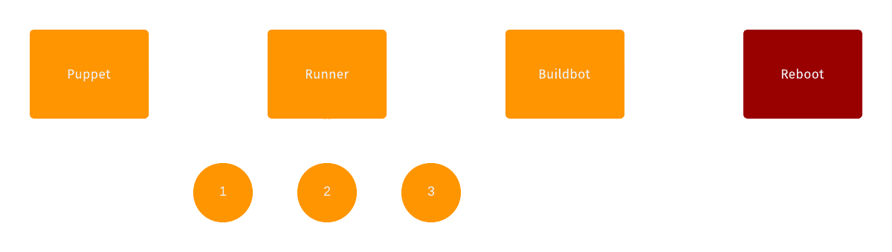
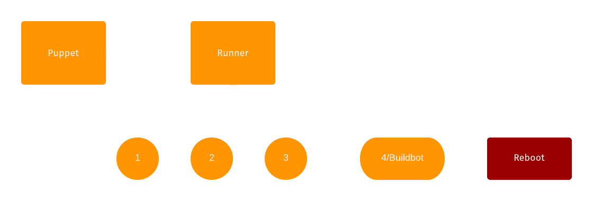

A Running Start
Created by Ian Connolly / Slides available on GitHub
Hi, I'm Ian
I'm an intern on Mozilla's Release Engineering team
I live here
I study here
I interned here

The Plan
- Background
- Runner
- Contributing
- Questions
Background
Mozilla Release Engineering is responsible for our build, test, and release infrastructure and automation.

We use Buildbot to automate our build/test/release cycles
Buildbot
- Defines the process of a job
- Schedules jobs
- Assigns slaves jobs
- Manages job on slave
- Reports status back of a job
Lifecycle of a build slave
The Rebooting Problem
- We lose the filesystem cache
- Wasted reboot time
- Load on puppet masters
We need to stop rebooting
Enter Runner
Runner
Runner is a cross-platform task runner.
Features
- Failure management
- Task-specific configuration
- Dependency management (yay DAGs)
Pre-Runner
Runner 1.0
Runner 1.1
Coming to a build slave near you soon...
- Currently: CentOS
- Next: Ubuntu
- Then: Mac, Windows
The Future
- No more reboots!
- Build-system agnosticism (TaskCluster)
- RelengAPI integration for monitoring
Advantages
- One common init story
- Manage the lifecycle of a slave
- Keeps buildbot jobs machine-agnostic
- Wins in performance, monitoring, and code re-use
Contributing
We ♡ Contributors
We Work With
- Python
- Puppet
- AWS
- REST APIs
We work at SCALE

Thanks, Kim!
Resources
Thanks!

Especially to Hal Wine, Chris Atlee, Dustin Mitchell, Jill Alvarez, Misty Orr, and everybody at Moz Releng